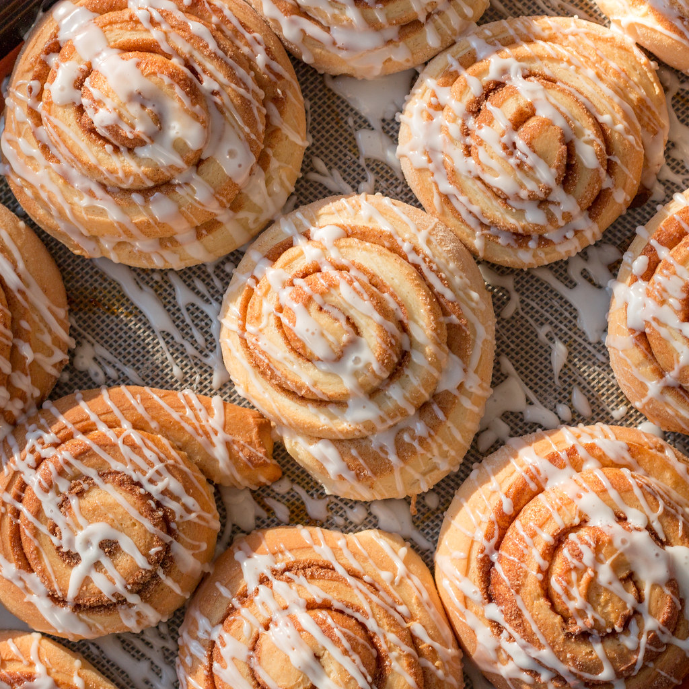

Cinnamon Roll

Description
A delicious and easy to make cinnamon roll!
Ingredients:
- 1 pound loaf frozen bread dough, thawed
- 3 tablespoons butter, melted
- ⅔ cup brown sugar
- ½ cup chopped walnuts
- 1 teaspoon ground cinnamon
- 1 teaspoon water
- ⅓ cup heavy whipping cream
- ⅔ cup sifted confectioners' sugar
- 2 tablespoons milk
- 1 dash vanilla extract
Steps:
- Gather all ingredients and lightly grease 2 round cake pans with butter
- Roll bread dough out to an 6x18-inch rectangle. Brush with melted butter
- Combine brown sugar, walnuts, and cinnamon in a small bowl; sprinkle over butter
- Roll dough into a log, starting at the long edge. Moisten edge with water and seal
- Cut log into 20 slices; arrange rolls, cut sides down,
in prepared cake pans. Cover with a towel
and let rise in a warm place until doubled in volume, about 90 minutes
- Preheat oven to 350°F (175°C). Pour heavy cream over dough
- Bake in preheated oven until golden brown, about 25 minutes
- Mix confectioners' sugar, milk, and vanilla extract in a small bowl; drizzle over warm cinnamon rolls to serve
- Enjoy!
Home